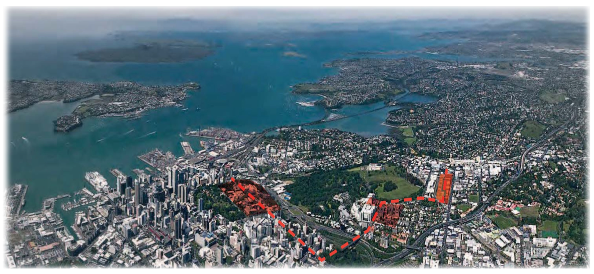
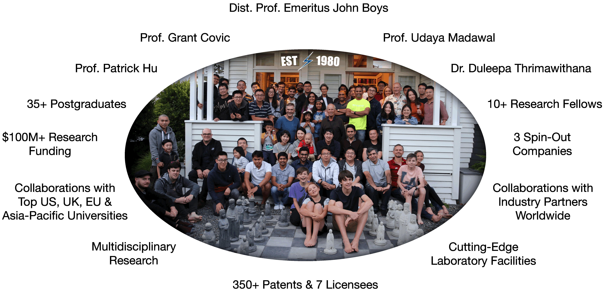

class: title-slide count: false .logo-title[] # WPT Systems for EV Applications ### Research at UoA .TitleAuthor[Duleepa J Thrimawithana] --- layout: true name: template_slide .logo-slide[] .footer[Duleepa J Thrimawithana, Department of Electrical, Computer and Software Engineering (2019)] --- # New Zealand .center[<iframe width="975" height="430" src="https://www.youtube.com/embed/fHCemviY06Y?modestbranding=0&autohide=1&controls=0&playsinline=0&autoplay=0" frameborder="0" allow="encrypted-media" allowfullscreen></iframe>] --- # The University of Auckland - Highest ranked New Zealand university and 85th in the QS World University Ranking - Over 5,000 staff members and 40,000 students - Nine faculties including Medical & Health Sciences, Engineering, Business & Economics and Science .center[] --- # Dept. of Electrical, Computer & Software Eng. .left-column[ - One of the 5 deparments in the Faculty of Engineering - Offers 3 undergraduate degree programs - Electrical & Electronics, Computer Systems and Software - Project based teaching - 35+ full-time academic staff members and 15+ post-doctoral research fellows - 150+ postgraduate students and 600+ undergraduate students - Regular visiting research scholars and research students - Research groups include Power Electronics, Power Systems, Signal Processing, Robotics, Embedded Systems, Parallel Computing, Telecommunications and Control Systems ] .right-column[ <img src="img/UoAEng.png" width="300px"> ] --- # Power Electronics Research Group .center[] --- class: title-slide layout: false count: false .logo-title[] # Research Projects ### Highlights & Updates --- layout: true name: template_slide .logo-slide[] .footer[Duleepa J Thrimawithana, Department of Electrical, Computer and Software Engineering (2019)] --- # Research Topics - Bi-directional IPT systems - Synchronisation & optimal control - Circuit topologies - Misalignment tolerant high-power IPT systems - Compensation topologies & control techniques - Modular and multi-level ciruit topologies - Grid integration of IPT systems - Low cost circuit topologies - Grid services - Dynamic charging - Circuit topologies & control techniques - Power distribution techniques - Thermal and packaging --- # Integrated Boost MMC (IB-MMC) .left-column[ - Derives a higher voltage to drive the compensation network - Reduces current stress and may eliminate step-up transformer - Inherantly eliminates circulating currents - Series-blocking capacitor can be omitted - Generate a low THD staircase modulated output voltage - Can generate wide range of voltages - Can use lower voltage higher performance devices <img src="img/IBMMC_Conv.gif" height="160px"> ] .right-column[ <img src="img/IBMMC_Vpi.gif" width="275px"> ] --- # IB-MMC Performance .left-column[ <img src="img/IBMMC_W.gif" width="700px"> ] .right-column[ - Maintains a constant 7.7 kW power transfer through primary control - Operate in 5-level mode at low k and 3-level mode at high k - Efficiency ranges between 91.5% and 92.4% across entire operating region - A simple algorithm used to ensure module voltages are balanced ] --- # Display and Inline 1. This is an inline integral: `\(\int_a^bf(x)dx\)` 2. More `\(x={a \over b}\)` formulae. Display formula: $$\int_a^bf(x)dx$$ $$e^{i\pi} + 1 = 0$$ --- #ABC .left-column[ - My heading 1 - abscdfsgergreererweryertyeryehtyytttryewrtrwetertertetewtewtreterrywryertyteytrtytryettet regregreg ] .right-column[ First statement dfgfgfdgdgdgdsfgdsgfgfdgfgfdgsdgdfg gdfsgdfgdsg Second statement ] --- Hello .twocolumn[ asbdfdsffkjbfsdbfkafjdfsakfbjfbsfbfjkafbflsboiflfds adfdlfiafispfsdifsdifbpdifdsfbfsidfbpfbdsifbdffisfiidbfpsfsb ]